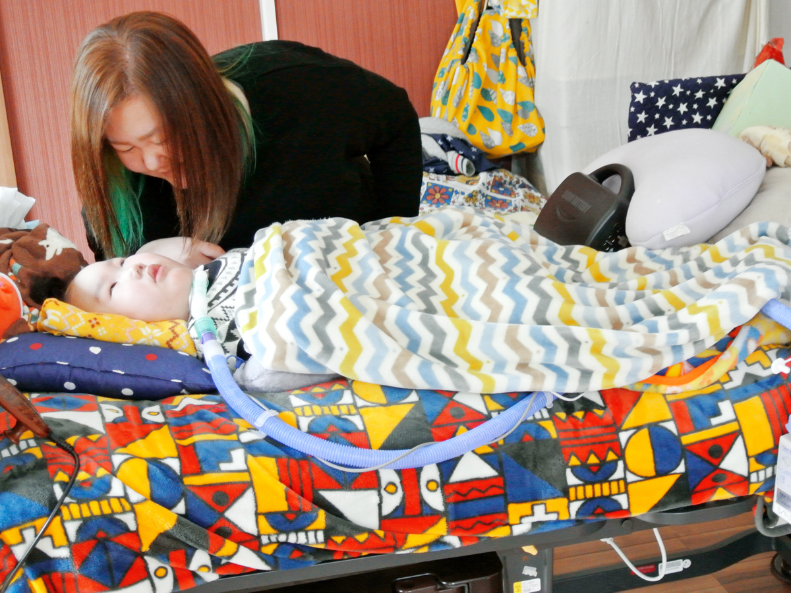
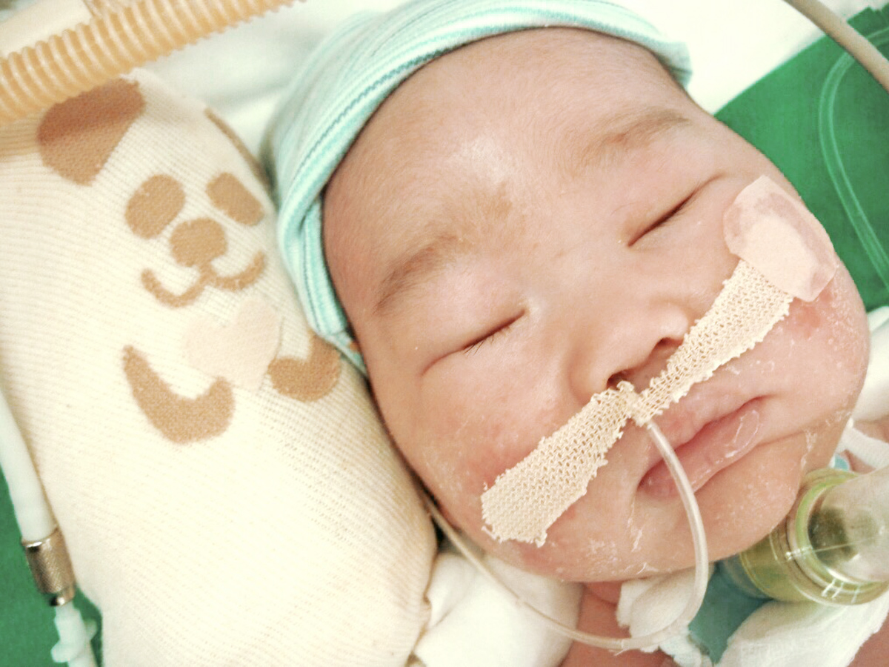
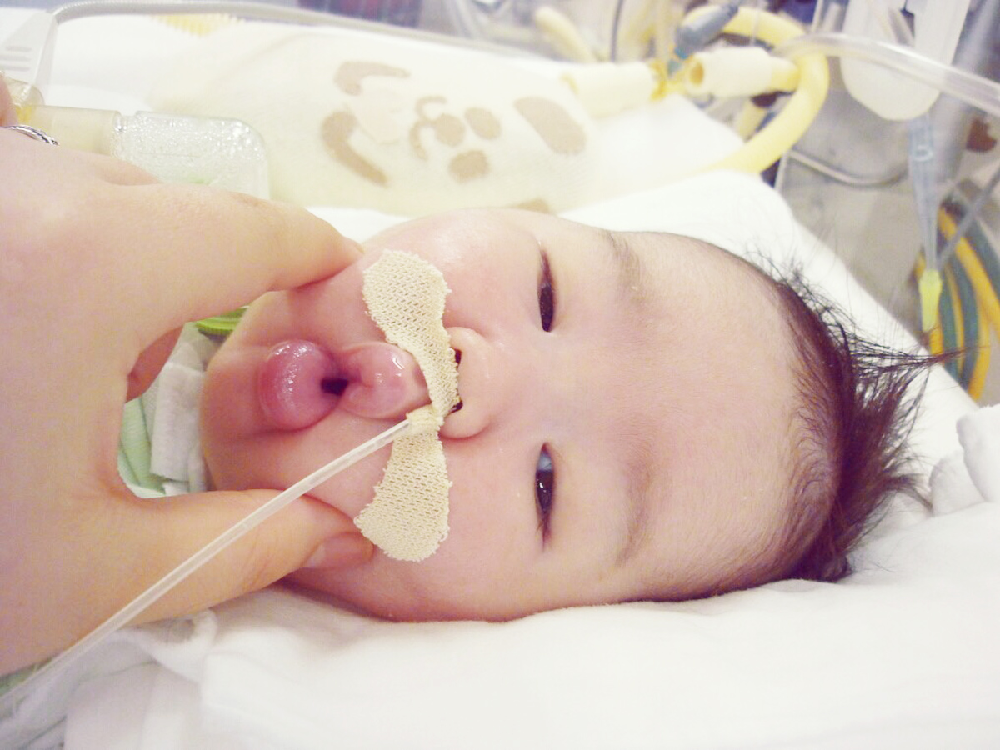
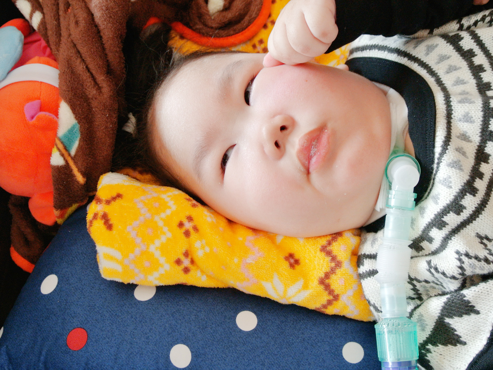
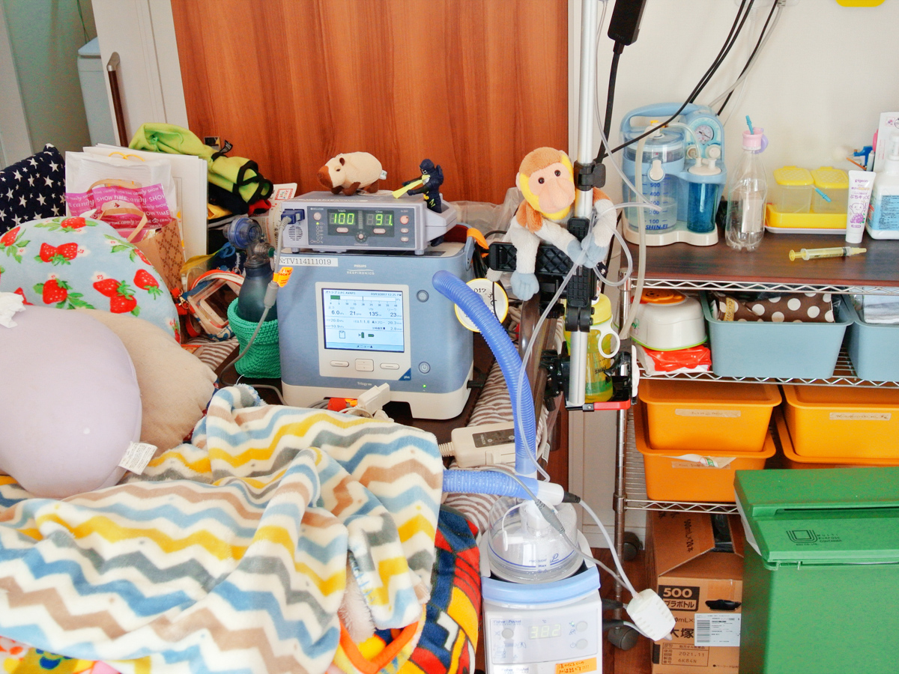
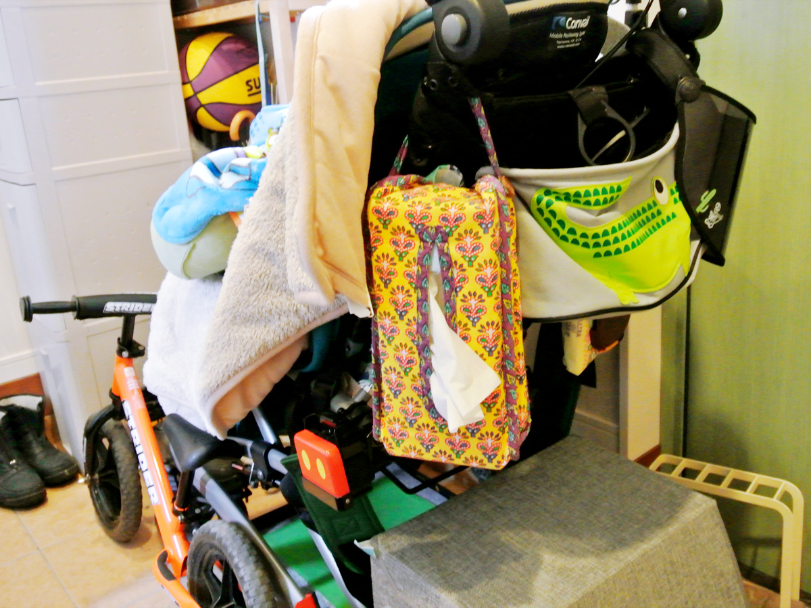
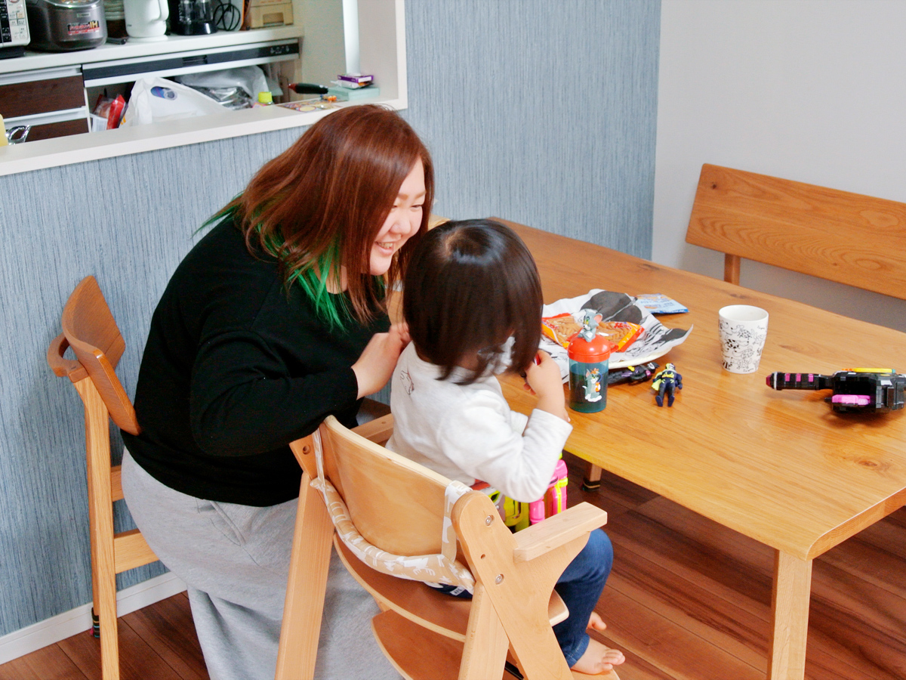
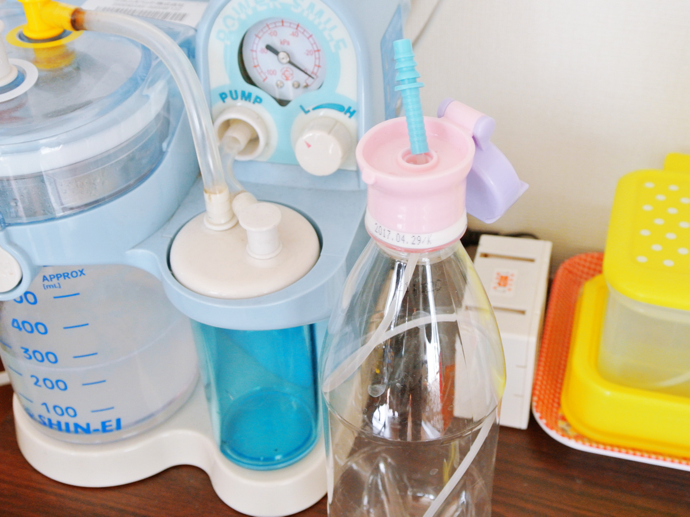
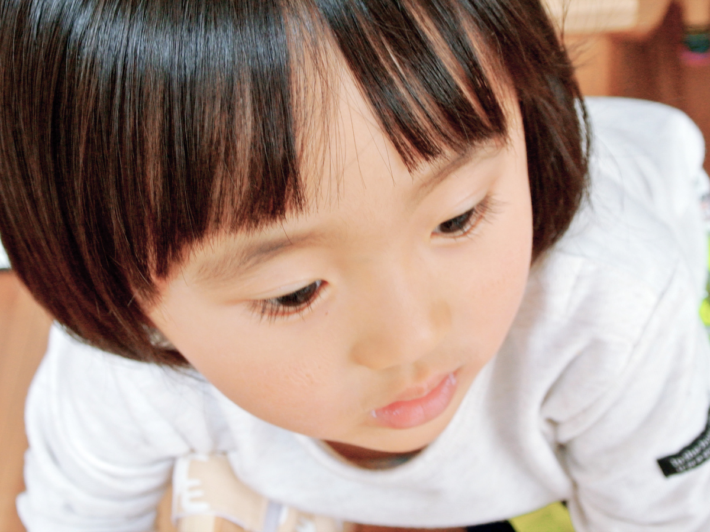
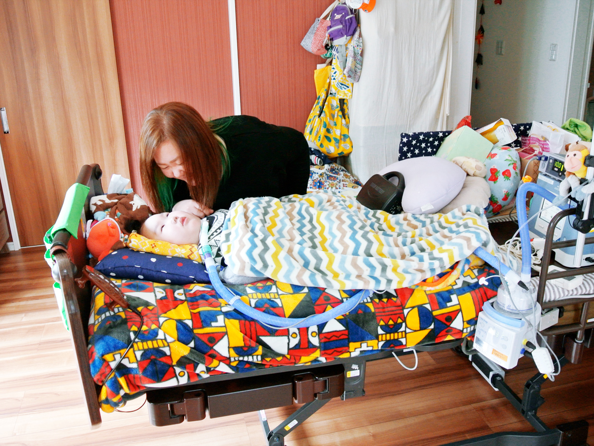

バンドもやってました
RUIさんが育った環境を教えてください。
RUI生まれも育ちも横浜です。両親はなんでも協力してくれたというか、「好きなようにしていいよ」と言ってくれていました。私「行く意味ない」って思って高校も辞めてるんですけど、辞めたら卒業資格が無くなって何もできなくなるってときでも、「自分で考えたならいいよ」って言ってくれる人たちでした。
RUIさんの意見を尊重してくれるご両親だったのですね。高校を辞めた後は何を？
RUI音楽の専門学校に入学し、歌ったり弾いたりしていました。
音楽がお好きなんですね。
RUIそうですね。専門学校を卒業した後はバーで働きながら、アコースティックとかバンドもやってました。私が23歳のときに結婚したんですけど、バンドのメンバーもみんな結婚してからも定期的に集まって、働きながら遊んでみたいな感じでしたが、子どもが生まれてからは忙しくてできなくなってしまいました。家で1人でギターを弾くくらいしか。

病院での処置も対応も、全部メモした
出産時のことを教えてください。
RUI奏生（かなる）を産んだのは25歳のときです。本当に普通に生まれてくる予定で、経過も順調でしたが予定日が1週間遅れて、「この日に誘発しよう」と言ってた当日に私がすごく熱を出して、寒気もあり即入院しました。陣痛もあったけど、微弱。破水もしてて、吐いたり、ずっと尋常じゃないくらい痛くて、必死でした。よく陣痛は「波がある」「休める」と言われてたけど、ひと晩中ずっと治りませんでした。
翌朝、誘発をはじめて、さらに痛くなり、その日の夕方に普通に下から産みました。そしたら、真っ白な状態で産まれてきたのですが、私は妙に冷静でした。あれだけ待ったから、「ああやっぱり」って。
そのとき先生が病院に電話していて、県内の環境が整っている病院に搬送しようとしていましたが断られてしまい、別の神奈川県の病院に受け入れてもらい、気管挿管するのも処置をされながら見てて、全部やっていたことを覚えています。
子どもは先に搬送されました。私は両親が来たときに大泣きしました。そのあと、あったことを忘れないうちに書いておこうと思い全部メモしました。まさか自分がこうなると思っていませんでした。
奏生くんと対面したときのお気持ちを教えてください。
RUI夜に写真を見たときは衝撃でした。顔がパンパンでした。私はとりあえずその病院を出たいと言って、次の日子どもと同じ病院に搬送してもらい会いました。先生からは説明は受けてたんですけど、「低体温療法をして、どうなるかな」と言われました。

私高校のときに介護をやった経験があったので、なんとなく言われてることがわかるんですよね。先生にも「もうだめだろうな」と思われてたと思います。そこの病院だとNICUの面会は絶対に親しかできないはずなのに、別室で息子はひいおじいちゃん、おじいちゃん、おばあちゃんに会わせてもらい、良くしてもらっていたけど、「やっぱり最期が近いからなのかな……」という気持ちでした。
そのときの診断と、奏生くんの経過を教えてください。
RUIはじめは水頭症か、ただのむくみと言われてました。子どもはだんだん落ち着いてきてはいるけど、動かないし目も開けない。先生にも「予後は良くないね」って言われてて。しかし、1ヶ月後に目を開けて。そのときは目を開けないと思っていたので、「目、開けちゃった、どうしよう！」って慌てちゃいました。それからはちょっと表情が出てきて、嫌な顔とか泣き顔をしたりするようになりました。
入院していた病院はやっぱり遠くて、冬には雪もすごい年で行き来も大変だったので、1ヶ月くらいで転院させてもらいました。そこから、気管切開と全身麻酔の話がありました。脳もダメージを受けて萎縮してしまっていて、目が開いてるのも不思議な状態でした。
今、目を開けてるのに全身麻酔でまた開かなくちゃうかもしれないととても不安でしたが、がっちり固定されて気管挿管されているのもかわいそうで、「じゃあ手術しよう」と気管切開してもらいました。
手術後にはもっと表情も出てきて、口を鳴らしてみたりとか。でも、自発がまったく無いのでチューブを外せることは無いです。

脳のMRIとか撮ってもらっていますが、脳がほぼ髄液で真っ黒というか、脳幹がちょっとだけ残ってるけど、脳波もフラットでほとんど機能しない状態でした。動いてはいるけど、ほぼ脳死状態で、先生にも「いつどうなるかわからないよ」と、遠回しに言われて。
訴えるかどうしようか迷ってた
診断名と発作について教えてください。
RUI診断名は、低酸素性虚血性脳症と重度の脳性麻痺です。発作はまったく無くて、他に病気は無いです。
出産した病院側と産科医療補償制度についての話はしましたか？
RUIしましたね。そこは地元で有名な個人病院で、私の妹もその病院で生まれてるので安心していたのですが、奏生の出産のとき、助産師さんも来ないし、モニターも外れてたけど誰も来ないし何も言われないし、「あれ？」って思ってました。
産んだ後に「おかしいな」と思って、カルテも見せてもらったら、空白とか曖昧なところがあって。そのときに産科医療の話も聞きました。書類の内容や処置に関しては病院や先生のこともあるので記事にしていただくことはできませんが、やりきれない思いでした。
産んだときに立ち会った先生は「すみません」と、最初泣いてくれてて。だから、それでいいかなって気持ちと、とりあえず奏生が楽しそうだから今はいいかなって。
奏生くんの名前の由来を教えてください。
RUI音楽が好きだったので、できれば音楽をやって欲しいなと思ってつけました。「奏」は入れようと思っていて、こういう状態になったので「生きる」を入れようと思って「奏生」。響きばっかりなんですけど。

お話を伺っていて、すごく前向きな印象をもちますが、それは同居されているご両親の存在は大きいですか？
RUI奏生が生まれたときも、両親がいてくれたことが大きいと思います。出産したあと、「帰れるなら、じゃあ帰ろうかー」って言ってくれて。普通に、「ヨシヨシ」ってしてくれるし。両親がそうしてくれたから、私もこうして受け入れられたと思います。普通は抱っこするにも、顔触るにも、機械ついてるので「触っていいのかな」とか気をつかうと思うんですけど、父も母も全然気にせず接します。それが大きいかな。
「同じ障害の人、紹介してください」
相談相手や情報ツールを教えてください。
RUI児童相談所で相談して「同じ障害の人いないか、在宅で生活してる人いないか」って聞いて教えてもらって会いました。病院でも先生に紹介をお願いして、会って、退院した後のことや必要なものとかを聞きました。やっぱり地元の友だちも話はなんでも聞いてくれるけど、答えてはくれない。
ネットで「気切して呼吸器の子」とか「虚血性脳症」で検索し、すごい調べましたね。それで伊吹くんち※にも出会ったんですよ！ ※伊吹くんち：KILINOKAにも掲載している奥井さんのこと。
すごく調べていたので、ずっと携帯を見てました（笑）最近はインスタグラムが多いです。それで全国に呼吸器の子のママ友ができて遊んだり、この前も大阪の家族が遊びに来てくれて、うちに泊まりました。あとは入院したときに話した病院のお友だちと遊んだりとかしてます。
行政の助成金の情報はどこかで得ましたか？
RUI役所に「貰えるものはないか」って聞きましたね。結構、ズカズカいきました。あとは呼吸器の集まりで知り合った先輩ママから、「オムツの申請も3歳からだよ」と教えてもらいましたし、他にもタクシーチケットは、申請しなくても横浜市から送られてきますね。私自身も、後輩ママがいたら伝えてます。5年前は人に会って役所に行って聞くしかなくて、大変だったから。

訪問系のサービスは何か利用してますか？
RUIお風呂も私が入れてるし、理学療法士に週1回木曜日に来てもらってるだけですね。でも大きくなったら抱えられなくなるし、サービスを利用するしかないかなと思ってます。あとうちは家族の協力体制がすごいですね。うちは両親も妹もみんなで同居していて、休みの日とか夜出かけようっていうときは、父と母が見てくれるし、妹もみてくれます。
母は基本、医療的ケアもできるし、父はまあまあ医療的ケアもやろうと思えばできる。抵抗なくみててもくれるし、人にはすごく恵まれています。
奏生くんの1週間のスケージュールを教えてください。
RUI火曜日に通園があって、水曜日に外来、木曜日に理学療法士の訓練があります。その他は私と奏生と楓生（かいり）の3人で公園行ったり出かけてます。4月からは通園が週に2回になります。
戦いごっこもさせてあげたい
ご家族のサポートは心強いですね。最近の悩みは何かありますか？
RUI周りからよく聞くのは、入所するのにすぐには入れないとか、あとはお風呂の問題。訪問入浴サービスを利用したくても、「呼吸器の子どもを入れたことがないからできない」と断られたりとか。私は友人の子どもがきょうだいで遊んでるのを見ると、思うところはありますね。うちもきょうだい2人だけど、遊べないから。楓生は、奏生が手が出せない分、手を支えて遊んだり遊び方は知ってるんですけどね。楓生も「走り回って遊んだり、戦いごっこしたいよね」と思います。
ご家族でお出かけすることは多いですか？
RUI私と子どもと3人で公園に行ったり、外食はよく行きますがお店に行って、入れないこともあります。車椅子用の駐車場を使うんですけど、スロープでバギーを出すときに、後ろに駐輪場があって出せなかったりして、別の場所に車を1度駐車して、バギーを出してから移動するなど行けないところも多いです。
普段は出かけてるけど、奏生が調子が悪くて外に出れないときのために、自宅に庭を作ったんですよね。楓生が自転車に乗れるように。でもやっぱり「公園行きたい」と言われるとき「ごめんね」と思います。

楓生くんは奏生くんとは違う病院で産んだのですか？
RUI楓生を産むときは「奏生と同じとこでは産まない」と決めて、奏生がお世話になっている病院で産みました。「また同じことがあったらどうしよう」って、恐怖はありましたけどね。 検診で毎回、主治医の先生に「大丈夫ですか？」ってすごい聞いて、お腹の赤ちゃんが生きているか死んでいるかも不安で、ずっと生まれるまで不安で仕方がなかったです。普通にふるまっていたけど……。
最後の検診で、血圧が上がってきて「入院しましょう」って言われたとき「ああもうヤバイ」って思いました。先生が「下から出してあげたい」って方針だったので、「暴れたりして血圧上げないでね」って言われました。
5日間誘発したんですけど出てこなくて、6日目に泣いて「1度家に帰りたい」と言って帰らせてもらいました。その後も主治医の先生に「なんかあったらどうしよう」って電話していました。また同じになったらどうしようってすごい不安でした。「2台呼吸器か……」って考えました。

結局、計画してた日に生まれてきました。生まれる前も看護師さんが来てくれて、主治医の先生がとりあげてくれました。隣のNICUでも先生たちが待っててくれて、「大丈夫だよ」って言ってくれて。周りの協力が大きかったかな。私はすごい先生に恵まれてて、看護師さんたちも「すごい感動した」って言ってくれました。
いなくなったときのことも、しっかり考える
今後について教えてください。
RUI5、6年後に環境は変わってるかなと思います。正直、奏生もいるかわからない。ちょっと風邪をひいただけで、何が起きるかわからない。この前の1月にIKEAに行ったとき、奏生が真っ青になって、心拍が落ちて20台までの徐脈になったことがあったんです。「死ぬかなーって……」って思いました。病院に行ったけど原因がわかりませんでした。
足と口はガクガクするけどだいぶ慣れてきたというか。「いつどうなるかわからない」っていうのは常にあります。呼吸器外れちゃって亡くなる子もいますから。今はやっぱり奏生が中心だけど、自分の人生もあるので、奏生がいなくなっちゃったときに「私、何もできない」ってなるのがすごい嫌なんです。私たちは、生きていかなきゃいけないので。
今後は入所を考えたり、同居している両親が退職するので、奏生のケアの交代ができるかなと思ってます。仕事ができる環境になったときに活かせるように、看護学校に行きたいなと思ってます。私は自分でケアをしてきたし、重症心身障害の子たちとの接し方もわかるし、抵抗なくみることができるので。

今、どんなときが楽しいですか？
RUIこの2人が遊んでるときは楽しいかな。すごく2人への愛が重すぎて（笑）「奏生ー！」「楓生ー！」みたいな。
先日も2人で手つないで寝てたり、楓生は何も言わないけど、呼吸器のこともわかってるみたいで移動させてたりとか。この子が気にかけてくれるのを見るのが嬉しいし、ちゃんと家族として当たり前のことができたとき嬉しい。食べれないのは当たり前だけど、匂いをちょっと嗅がせたり、ストローを挿してあげたり。
奏生にとっても、楓生の存在が大きいです。未だに脳波はあんまり動いてないんですけど、楓生が生まれてから反応が出るようになって、楽しければ笑うし、喧嘩して楓生が泣くと「ざまあみろ」って笑ったり、怒って、歯ぎしりしたりします。お互いにとってすごい良かったかなって思います。

RUIさんご自身のリフレッシュ方法はありますか？
RUIやっぱり、友だちと遊びに行くのが楽しいです。地元の友だちと子どもたちが寝てから夜に出かけたり。一緒に育った友だちの存在が大きいです。いないとやっていけないかな。
同じ境遇のご家族に伝えたいことはありますか？
RUI私、すごい特殊みたいで。周りの人みたいに「はぁ……どうしよう、なんで？なんで？」っていうのが無かったんです。臨床心理士の先生に「なんでそんなに明るいの？」ってすごい言われていました。逆にちょっとおかしくなってるんじゃないかって思われてて、臨床心理士との面談もずっと入っていました。
私は自分が産んだせいか、母だったせいか、そんなにショックを受けなかったというか。「とりあえず生きてるから帰ろうよ」って。もしかしたらダメかもしれない、だったら早く帰って楽しいことしようって。

今、こうして一緒にいられるからいいんじゃないかなって思います！
ご協力いただいたRUIさま、奏生くん、楓生くんに心から感謝します。